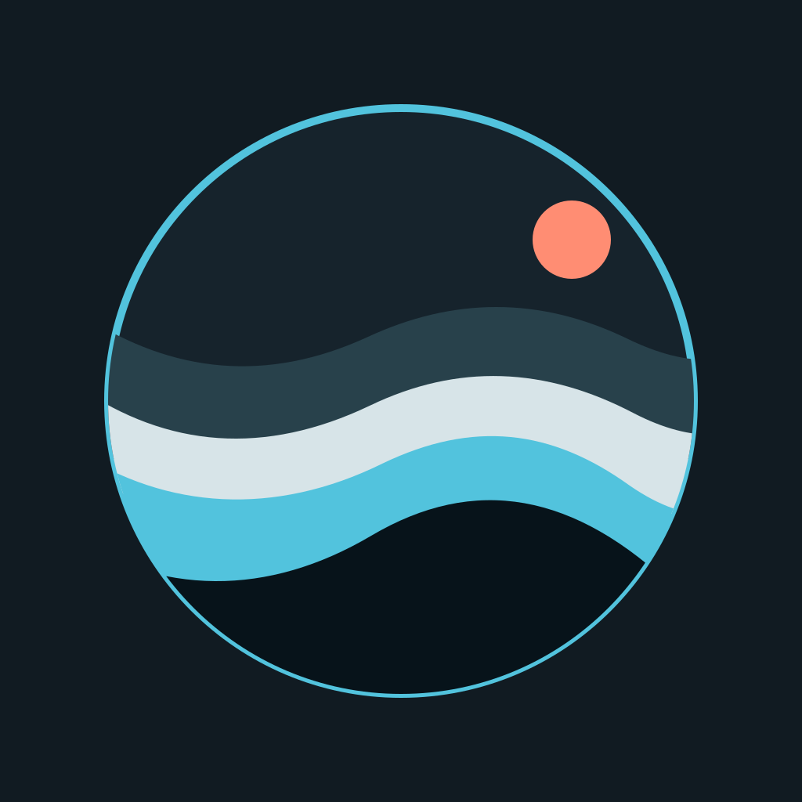

Maya Lin Launch notes for review
Two details before Thursday…
Work · Gmail Cove Mail
Cove Mail
Native email for macOS
Cove Mail brings iCloud, Gmail, and standard IMAP accounts into a focused Mac app—with an optional way to bring your own AI to email. Read, search, write, and organize mail without giving up the way your Mac should feel.
The AI connection is optional. Cove Mail is a complete email client without it.
Hi Jordan,
Here are the final notes from our launch review. Could you confirm the onboarding copy and Thursday preview?
Thanks,
Maya
Built for familiar Mac workflows.
iCloud, Gmail, and IMAP together.
Connect a compatible assistant—or don’t.
Native Mac app
Cove Mail puts everyday email at the center: a readable inbox, fast local search, proper compose and drafts, and clear account status. It works as a complete client on its own, with an assistant only when you choose.
Press Command-K to compose, search mail, open a mailbox, or jump into Settings.
Quick actions
Cove Mail · 3 accountsMultiple inboxes, one app✓Provider independent
Bring iCloud Mail, Gmail, and manually configured IMAP/SMTP accounts into Cove Mail without losing their separate identities. Move between accounts and mailboxes in one consistent Mac experience while provider differences stay behind the scenes.
Optional by design
AI access to email is often treated as all or nothing. Cove Mail takes a more deliberate approach: connect a compatible cloud assistant or local model, then choose the accounts and capabilities it can use.

Cove MailLocal MCP connectionUse a compatible cloud assistant or local model rather than an AI provider chosen by Cove Mail.
Scope the connection to the email accounts you want. Adding an account does not have to broaden access.
Metadata, message bodies, drafts, sending, and deletion are separately permissioned, with confirmation for sensitive actions.
Local by default
Cove Mail keeps account configuration, cached mail, search, drafts, rules, and activity on your Mac. Credentials remain protected by macOS Keychain and are never returned through MCP.
Read the Privacy PolicyThe complete client
Find messages across connected accounts using sender, recipient, subject, date, flags, and attachment details—without guessing which inbox holds them.
Open full messages and review attachment details normally, with the information you need available directly in the app.
Compose, save drafts, reply, forward, organize mail, add attachments, and send from account-specific identities and signatures.
Keep selected mailboxes, messages, and attachments available offline while seeing sync, indexing, Outbox, and recovery status clearly.